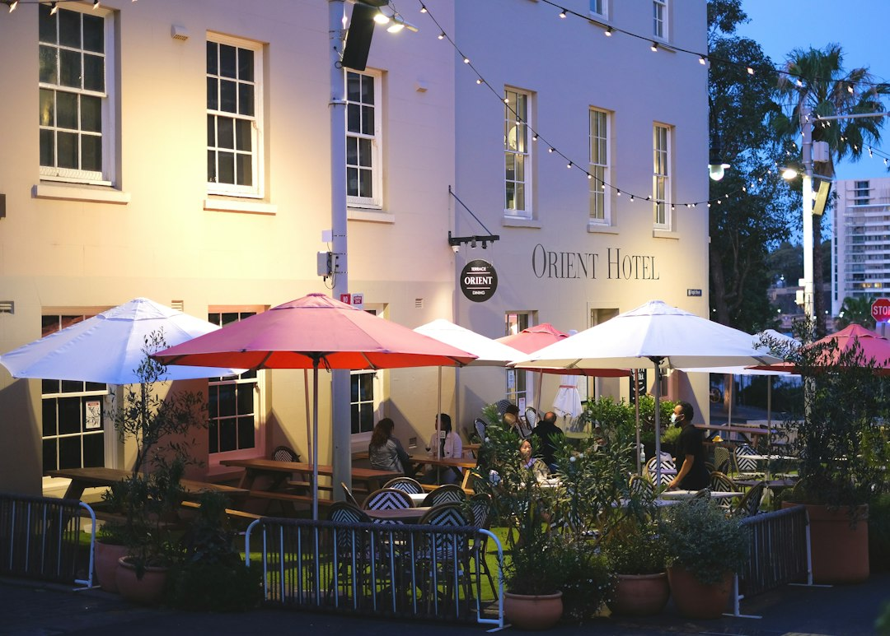

Sydney diners can compare 13 restaurant categories, use location paths, read review displays, view photos where available, compare services and pricing, then contact venues directly by call, email or quote request. Treat each listing as a shortlist tool: confirm menus, trading details, booking availability, private dining options and pricing with the restaurant before relying on what you saw while browsing.
For diners comparing restaurants sydney options, the useful starting point is a clear way to filter cuisine, location, reviews and booking needs before choosing where to enquire.
Restaurants Sydney Explained
Best Sydney Restaurants organises Sydney dining around search, comparison and direct contact. That helps when the same person might be weighing a casual family meal, a dinner booking, takeaway, or a private function, because each occasion needs different checks before a venue is suitable.
Use the listing details to remove poor fits early. Suburb, category, review display, photos and profile wording can show whether a venue belongs on the shortlist. The decision should still finish with the restaurant, especially where menus, trading details, booking availability, pricing or group arrangements affect the plan.
- Quick meal: filter by nearby location and practical service cues such as takeaway or reservations.
- Planned dinner: compare cuisine style, suburb and whether the profile points to menu or booking information.
- Group enquiry: look for private dining or functions, then ask the venue about capacity, menu format and conditions.
Use Categories As Filters
The directory lists 13 categories: casual and family, Chinese, fine dining, Indian, Italian, Japanese, Mediterranean, modern Australian, restaurants, seafood, steak and grill, Thai, and vegetarian and vegan. A category is a starting filter, not a final verdict on fit.
A vegetarian and vegan search still needs practical confirmation, such as current menu options, suburb and whether takeaway is mentioned. A fine dining or modern Australian search may need reservation details, private dining information or function suitability. A seafood, steak and grill, Italian or Mediterranean shortlist may be more useful when the occasion is a planned dinner rather than a quick meal.
The value is in narrowing choices without pretending every listing answers every question. When the category matches the occasion, move to location, review context and direct confirmation.
Read Location Paths Carefully
The source includes location paths such as Parramatta, Surry Hills, Newtown, Woolloomooloo, Pyrmont, Barangaroo, Potts Point, Darlinghurst, Haymarket and The Rocks. These are browsing routes, not rankings of where to eat.
Location should lead when dinner is tied to a workplace, event, transport plan or meeting point. A Haymarket search may be useful for someone already nearby, while Barangaroo or The Rocks may matter for a waterfront or city plan. The supplied page does not claim that one suburb is better than another, so the practical question is whether the area works for the people attending.
For another route into the same topic, this Sydney restaurant comparison guide keeps the focus on filtering and checking rather than treating one visible listing as the whole answer.
What To Check On A Profile
A useful profile should tell you what to verify next. The examples on the source page show suburb labels, cuisine or category labels, review displays and short descriptions. Some profile text points readers towards menus, reservations, takeaway, dinner, private dining or functions.
- Check the suburb against the actual plan for the meal.
- Read the category and description together, especially where the occasion has a service need.
- Use reviews as one input, not as a booking confirmation.
- Look for photos and pricing information where they are shown.
- Contact the venue directly before relying on current menus, trading details, availability or group arrangements.
This method keeps a directory search useful without turning a profile into a promise.
Who This Applies To
This guide is for people who know they want a Sydney venue but have not chosen the dining format. It suits locals comparing suburbs, visitors trying to understand the available cuisine paths, organisers checking whether private dining or functions are mentioned, and restaurant operators looking at how listings present category, location and contact options.
It is less useful for anyone who needs an immediate booking answer at a precise time. The source page directs readers to check menus, trading details and booking availability with the venue, so time sensitive plans should move from browsing to direct enquiry quickly.
For the cleanest shortlist, choose the meal type first, apply suburb or category filters second, then confirm the details that could change before arrival.
- Choose the meal type. Decide whether the plan is casual, family focused, formal, takeaway friendly or suited to a group.
- Filter by suburb or category. Use the listed locations and 13 categories to reduce the search to venues that fit the occasion.
- Read the profile cues. Check review display, photos, category, suburb and any references to menus, reservations, takeaway, private dining or functions.
- Confirm with the venue. Contact the restaurant directly before relying on menus, trading details, availability, pricing or group arrangements.
| Search path | Best when | What to confirm next |
|---|---|---|
| Category first | You know the cuisine or dining style | Menu details, reservation needs and service options |
| Location first | Travel time or suburb is the main constraint | Current trading details and booking availability |
| Service cue first | You need takeaway, functions or private dining | Capacity, menu format, pricing and direct contact details |
Common questions
How should I compare Sydney restaurant listings? Start with the occasion, then filter by category and location. Use reviews, photos, service cues and pricing information where shown, then contact the venue directly for current details.
Does a profile guarantee the restaurant is available? No. The source page tells readers to check menus, trading details and booking availability with the venue, so a profile should be treated as a discovery and comparison aid.
Which categories are available in the directory? The listed categories are casual and family, Chinese, fine dining, Indian, Italian, Japanese, Mediterranean, modern Australian, restaurants, seafood, steak and grill, Thai, and vegetarian and vegan.
When is location more important than cuisine? Location should lead when the meal is tied to travel, work, an event or a fixed suburb. The directory includes location paths such as Parramatta, Surry Hills, Newtown, Barangaroo, Potts Point, Haymarket and The Rocks.
This guide covers how to compare Sydney dining listings by category, location, service cues and direct venue checks.